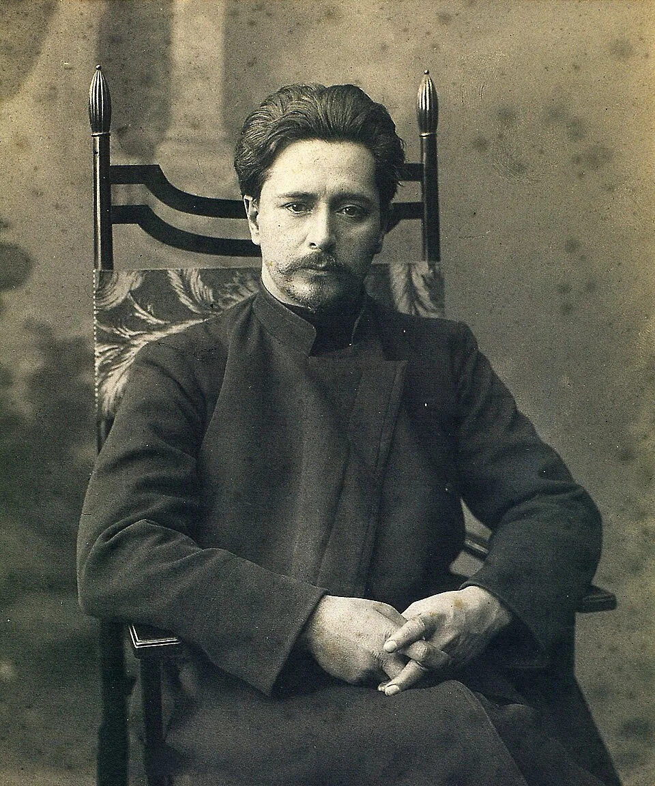

Леонид Андреев
1871–1919 | Прозаик, драматург
Духовные ценности в творчестве
Андреев исследовал тёмные глубины человеческой души, показывая, что добро и зло часто переплетены. Он ставил перед читателем сложные нравственные вопросы, не давая однозначных ответов, и призывал к состраданию даже к тем, кого принято осуждать.
«Люди будут судить, но Бог прощает. В этом разница между правдой земной и правдой небесной.»